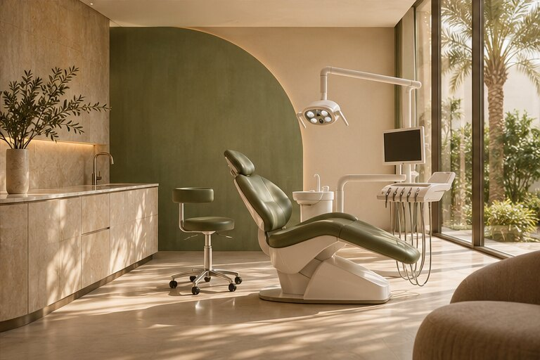

THE WORK.
Four websites. Four very different businesses. Each one starts with the same question: what does this audience need to feel, understand, and do?
Selected work

Bayline Dubai
Website design & development
Jin Restaurant
Website design & development
Nacre Dental
Website design & developmentEditorial images stand in for site screenshots. Tools in my workflow: Astro, Cloudflare, Resend, and GitHub. Project-specific stack details will accompany the case studies.
Discuss a project